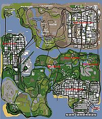

De: La Frikipedia, la enciclopedia extremadamente seria.
De: La Frikipedia, la enciclopedia extremadamente seria. De: La Frikipedia, la enciclopedia extremadamente seria.

|
FRIKIPEDIA QUIERE QUE ESTA DEFINICIÓN
PASE A SER UN ARTÍCULO FRIKIPÉDICO La información contenida en este artículo es una mínima parte de su jugo total, así que ponte los guantes, saca el tupperwere y empieza a exprimir el tema. Si lo haces serás recompensado con una galleta en almíbar y algo más. |
| De la serie imperios antiguos: | |||||
| Reino ostrogodo u ostrogordo | |||||
| |||||
| Lema: Un desalojo, otra okupación | |||||
| Himno: ¡Gordos antes que embarazados!
| |||||
| 
| |||||
| Capital(es) | Gordilandia | ||||
| Mayor ciudad | Nápoles | ||||
| Lenguas oficiales | Gordés (lengua sólo hablada por ostrogordos) | ||||
| Religión oficial | | ||||
| Gobierno | Monarquía | ||||
| El ganador de la carrera | Zenón One | ||||
| Fecha de fundación | El venti-quinze de septienero de -2058 antes de Dios | ||||
| Caída | Cuando los atacaron los vándalos y los fétidos | ||||
| Edad de oro | En la bota | ||||
| Periodo de Estancamiento o reseción | El país siempre estaba en crisis | ||||
| Máxima Extensión | Toda la bota y Yugoslavia | ||||
| Forma de economía | Venta de grasa | ||||
| Estados que se despacho | Ganaron la bota en una partida de póker ante los visigodos | ||||
| Población calculada | Unos cuantos... teniendo en cuenta a los gordos embarazados | ||||
| Moneda | Se repartían grasa | ||||
| Zona horaria | Ni idea | ||||
| Legado(s) | El hombre embarazado | ||||
| ¿Por que se vino abajo? | Se ahogaron en Venecia | ||||
| | |||||
«Cuidado Josito, que te aplasta el gordo»
~ Madre preocupada porque su hijo va a ser aplastado por un gordo
«¡Joder!, ¡he perdido un kilo! Vamos a celebrar un banquete de 50 platos»
~ Ostrogordo feliz por perder un kilo
«Nos hemos quedado sin comida ¡Ahhhhhhhhhhhhhhhhhhhhhhhhhhhhhhhh!»
~ Ostrogordo al enterarse de que su país está en bancarrota, otra vez
«Ay Manolo, mira que tu hijo se haya perdido en medio de tu barriga...»
~ Ostrogordo manteniendo una conversación diaria con otro ostrogordo
«Manuel, creo que esa no es una buena forma de sacar al perro»
~ Un ostrogordo montado en un coche y un perro atado al lado del vehí-culo
«Oh no, estoy embarazado»
~ Típica respuesta de un ostrogordo
El reino ostrogordo es un reino maricón al lado del reino visigodo (o visigordo, cómo queráis). Fue fundado por un grupo de gordos que buscaban una residencia de lujo al lado de los visigodos, aunque se acabaron quejando porque contrataban a la vieja del visillo para que les espiara. Eran compis de cole de los fétidos los gépidos, de los suevos (les gustaba sobajear muchas cosas) y de los vándalos eran mu malos. Su general, Zenón 1º, ganó una carrera entre los demás participantes para ser rey, y se ganó el puesto número 1. Con este tío conquistaron Serbia, Montenegro (aquí se perdieron de noche en medio del monte) y Corbatia.
Cuando los gordos se asentaron, unos gilipollas reclamaron el territorio, pero ellos se negaron. Los fumados que les atacaron (los romanos) empezaron a pegarlos, pero entonces, Chuck Norris bajó del cielo y aplastó a los enemigos.
En 2011 se les acusó de plagio porque les robaron los inventos a los romanos. Estos, de nuevo, se enfadaron mucho y les atacaron, pero cuando los romanos pegaban a los gordos, rebotaban sus manos y sus armas en la barriga, y ésta la mandaba pal quinto coño (está por el Mediterráneo, o por ahí).
Al ganar la península de la bota, montaron un chiringuito y montaron una fiestuqui con todos los reinos (menos con los frisones, que eran unos marginados), pero los vándalos (que eran mu malos) y los fétidos atacaron a la ciudad de Seleacusa (o Siracusa, donde hacían la fiestuqui) y la liaron parda. Los ostrogordos, ofendidos, deciden pedir ayuda a los demás, pero ellos pasan de los gordos y se quedan marginados. Se esconden en Venecia, pero como no saben nadar se ahogan, acabando con el reino.
Autor(es):